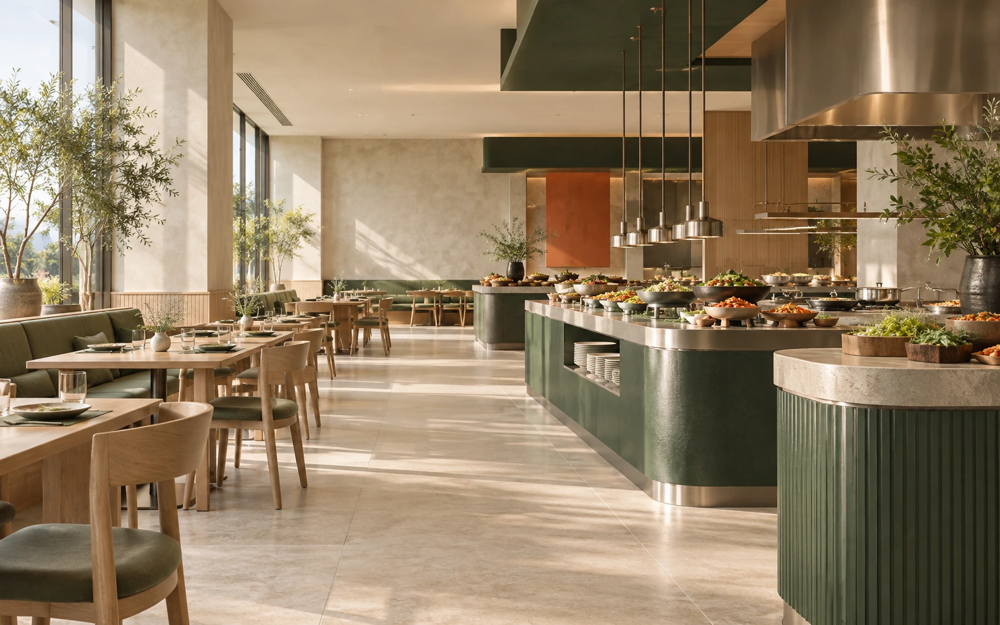

MARKET STORY
매일의 식사는 더 다양하고, 운영은 더 명료하게
한 끼를 고르는 기준은 사람마다 다릅니다. 밥상궁은 익숙한 한식의 구성을 세분화해 각자의 취향과 식사량에 맞춰 담을 수 있도록 설계합니다.
메뉴의 다양성만큼 중요한 것은 매장의 일관된 흐름입니다. 조리, 보충, 퇴식의 동선을 구분해 손님이 머무는 공간과 운영자가 일하는 공간이 자연스럽게 이어지도록 구성합니다.
BAPSANGGUNG
밥상궁은 밥과 국, 메인 요리와 반찬을 한 자리에서 고르는 한식 식사 브랜드입니다. 손님에게는 선택이 편안한 밥상을, 운영자에게는 흐름이 분명한 매장을 제안합니다.
브랜드 도입 문의하기
MARKET STORY
한 끼를 고르는 기준은 사람마다 다릅니다. 밥상궁은 익숙한 한식의 구성을 세분화해 각자의 취향과 식사량에 맞춰 담을 수 있도록 설계합니다.
메뉴의 다양성만큼 중요한 것은 매장의 일관된 흐름입니다. 조리, 보충, 퇴식의 동선을 구분해 손님이 머무는 공간과 운영자가 일하는 공간이 자연스럽게 이어지도록 구성합니다.
STANDARD SPACE
330㎡ 공간을 기준으로 180석, 뷔페, 주방을 균형 있게 배치한 공간 예시입니다. 입지와 현장 조건에 따라 실제 설계는 달라질 수 있습니다.
고객 동선 입장 → 결제 → 배식 → 착석 → 퇴식
직원 조리·보충·회수 동선 주방과 뷔페, 세척 구역을 연결
보조 출입구 기존 화장실 위치에 고객용 출입구를 추가해 입·퇴장 흐름을 분산
화장실·고객용 손씻는 공간을 좌석으로 전환한 예시 설계입니다. 실제 설계는 현장 조건과 관련 법규에 따라 달라집니다.OPERATING SYSTEM
조리, 보충, 퇴식의 역할과 이동을 구분해 매장 운영의 기준을 세웁니다.
주방에서 메뉴를 준비하고 완성하는 흐름입니다.
완성된 음식을 뷔페에 채우고 상태를 살피는 흐름입니다.
식사를 마친 식기와 잔반을 회수하는 흐름입니다.
BUSINESS MODEL
매장 규모, 좌석 수, 메뉴 구성과 운영 동선을 함께 살펴 입지에 맞는 실행안을 검토합니다. 상담 과정에서는 매장 구성과 운영 조건을 구체적으로 확인할 수 있습니다.
INQUIRY
입지와 운영 계획을 남겨 주시면 상담에 필요한 항목을 확인할 수 있습니다.